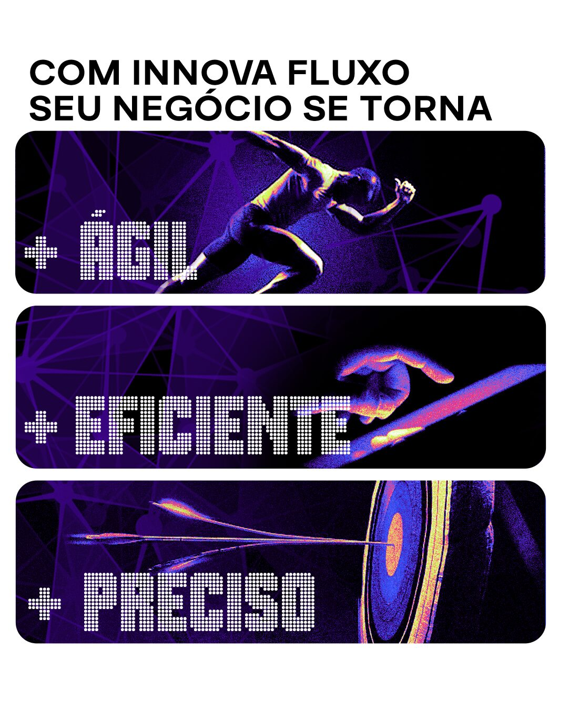
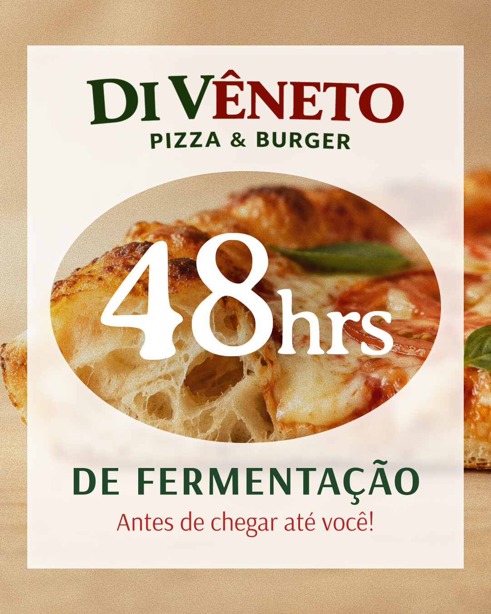
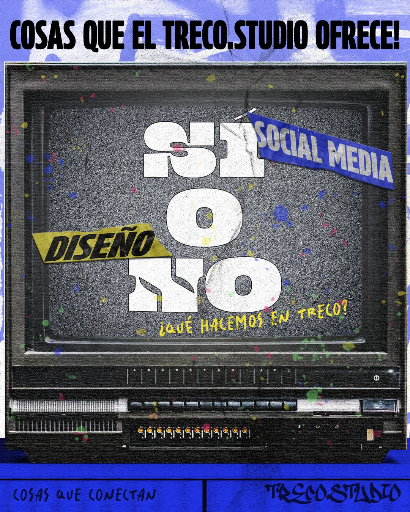
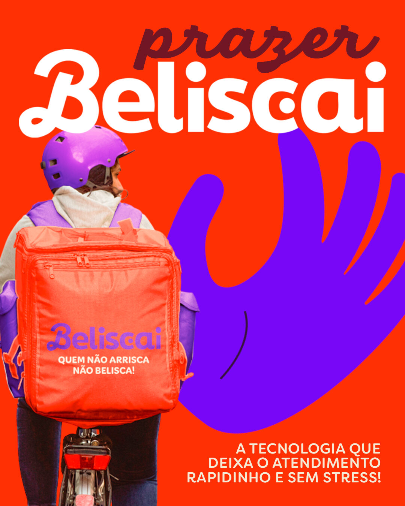
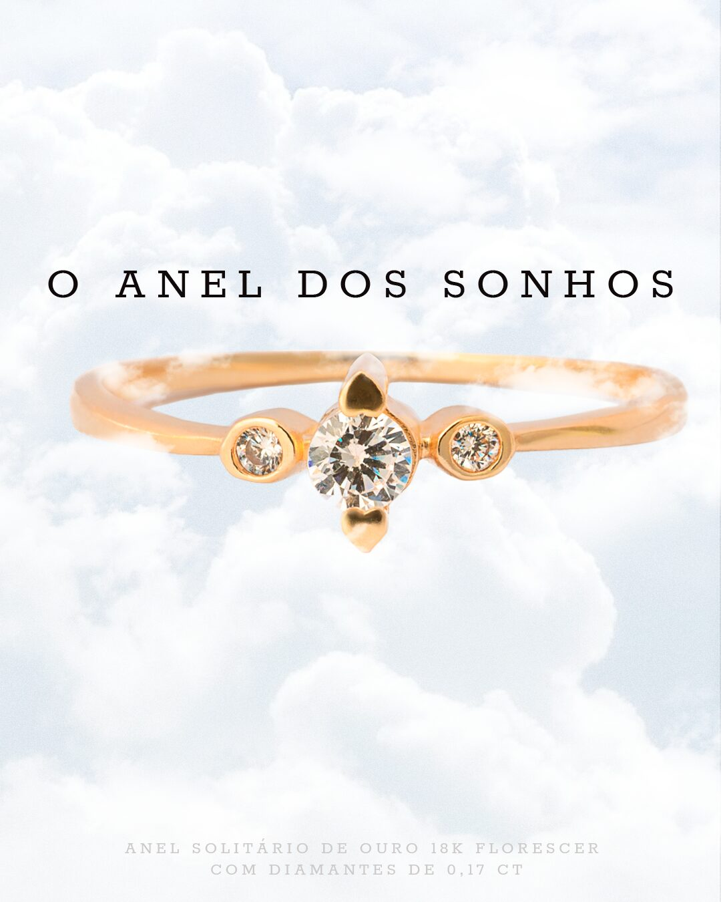
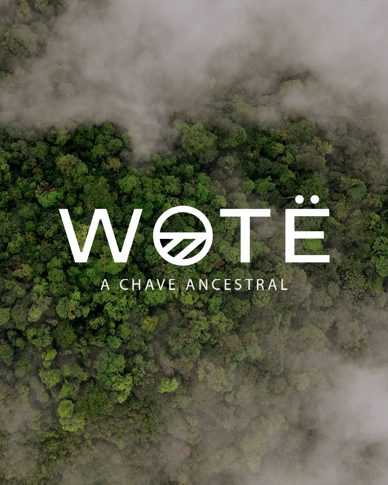
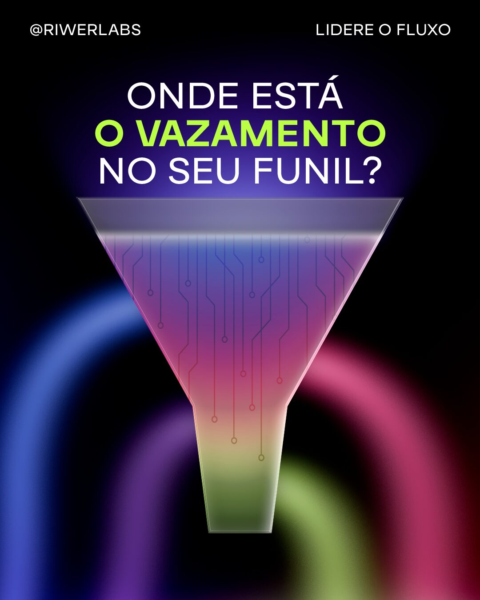
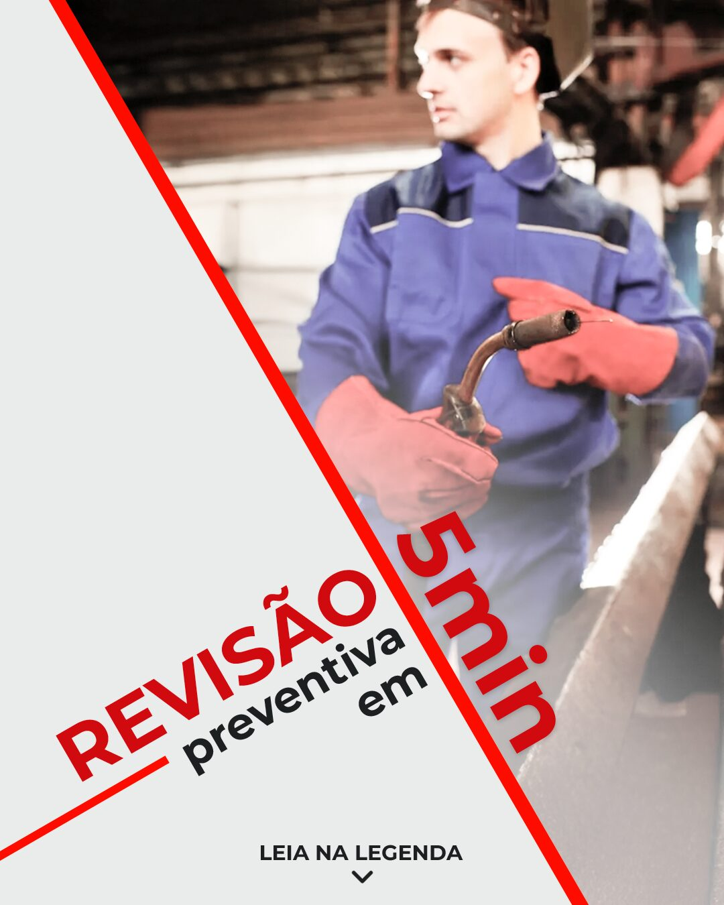

Otros Clientes

Social media
Trabajo recurrente de social media entre 2022 y 2025 para marcas de sectores muy distintos: tecnología, gastronomía, joyería, CBD, agencias e industria. Cada pieza parte de la identidad del cliente, no de una plantilla propia.







Créditos
Clientes
Innova · Di Vêneto · Treco Studio · Beliscai · Refiore · Wotë · Riwer Labs · Sulmig
Año
2022 – 2025
Mi rol
Dirección creativa · Diseño · Estrategia de contenido